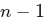

UNIDAD 1:
FUNDAMENTOS DE LA PROGRAMACIÓN
¶
FICHA TÉCNICA DE LA UNIDAD
| Unidad Trabajo | UT1: Fundamentos de programación |
| Resultados de Aprendizaje | RA1: Analiza los problemas planteados, identificando los entornos de aplicación y diseñando algoritmos lógicos para su resolución. |
| Criterios de Evaluación | CE 1.a: Fases de resolución de problemas y pensamiento computacional. CE 1.b: Diseño de algoritmos (pseudocódigo/diagramas). CE 1.c: Representaciones lógicas y tablas de verdad. CE 1.d: Viabilidad y modularidad. |
| Tiempo | 15 horas (15 Sep - 10 Oct / 1º Trimestre) |
ÍNDICE DE CONTENIDOS
2. ALGORÍTMICA Y PENSAMIENTO COMPUTACIONAL
2.2. Algoritmo frente a Programa
3. HERRAMIENTAS DE REPRESENTACIÓN DE ALGORITMOS
4. FASES DEL DESARROLLO DE SOFTWARE
4.1. Fase de Resolución del Problema
4.3. Clasificación de los Lenguajes de Programación
5. ESTRUCTURAS DE CONTROL DE FLUJO
6. ESTRUCTURAS DE DATOS HOMOGÉNEAS: ARRAYS (ARREGLOS)
7. MODULARIDAD Y PROGRAMACIÓN ESTRUCTURADA: FUNCIONES
8. CUADERNO DE PRÁCTICAS RESUELTAS
1. INTRODUCCIÓN ¶
En el ámbito de la administración de sistemas e infraestructura de red, la búsqueda de soluciones automatizadas para optimizar tareas cotidianas (como la monitorización de servicios, realización de copias de seguridad o análisis de logs) requiere una sistemática rigurosa. Llevar a cabo una solución de software implica un proceso metodológico estructurado en etapas bien definidas.
Toda solución informática desarrollada debe medirse bajo criterios de calidad de ingeniería de software. Se establecen tres virtudes fundamentales:
Corrección: El software debe realizar exactamente la tarea para la que fue diseñado, satisfaciendo todas las especificaciones y requisitos del problema original.
Eficacia: Capacidad del software para resolver el problema de manera adecuada y producir los resultados esperados bajo condiciones normales de operación.
Eficiencia: Capacidad del software para minimizar el coste de ejecución. Esto se traduce en realizar la tarea en un tiempo mínimo T de procesamiento y con un uso óptimo y mínimo de los recursos físicos de hardware disponibles (espacio en memoria RAM, porcentaje de uso de CPU, operaciones de entrada/salida de disco y consumo de ancho de banda en red).
2. ALGORÍTMICA Y PENSAMIENTO COMPUTACIONAL ¶
2.1. ¿Qué es un Algoritmo? ¶
Un algorítmo se define como una secuencia precisa, definida, ordenada y finita de instrucciones que describen de forma inequívoca los pasos necesarios para hallar la solución a un problema o llevar a cabo una tarea concreta.
Los algoritmos poseen una propiedad fundamental: son independientes de los lenguajes de programación y de las computadoras físicas donde se ejecutan. Un mismo algoritmo puede ser traducido a múltiples lenguajes de programación (como Python, Bash, PowerShell, C++ o Java) y ejecutarse de manera equivalente en diferentes dispositivos hardware (servidores, routers, microcontroladores o estaciones de trabajo).
2.2. Algoritmo frente a Programa ¶
Para comprender la diferencia, consideremos la analogía de una receta de cocina:
La receta representa el algoritmo: un conjunto de pasos lógicos abstractos e independientes del cocinero o de la marca de los utensilios.
El programa es la materialización del algoritmo en el mundo de la computación. Para que el ordenador sea capaz de ejecutar los pasos lógicos descritos en el algoritmo, estos deben codificarse utilizando la sintaxis estricta de un determinado lenguaje de programación. El programa resultante procesa datos de entrada para someterlos a una lógica de procesamiento y generar una salida de información legible.
-----> | ENTRADAS | ------> | PROCESAMIENTO | ------> | SALIDAS | ----->
2.3. Características Fundamentales de los Algoritmos ¶
Todo algoritmo viable debe cumplir tres reglas de diseño:
Precisión: Debe indicar el orden riguroso de realización de cada paso de forma secuencial sin ambigüedades.
Definición: Si se ejecuta el algoritmo dos o más veces utilizando el mismo conjunto de datos de entrada, se debe obtener exactamente el mismo resultado en cada ejecución.
Finitud: El algoritmo debe terminar en algún momento. Debe constar de un número finito de pasos lógicos estructurados.
2.4. Diseño Modular y Estrategia Descendente (Top-Down) ¶
Cuando nos enfrentamos a problemas de automatización complejos, la estrategia más eficiente consiste en descomponer el problema principal en subproblemas más sencillos, y estos, a su vez, en tareas elementales que puedan abordarse de forma independiente.
Este enfoque metodológico se conoce como diseño descendente, diseño modular o top-down design, y se fundamenta sobre el paradigma clásico de resolución de problemas: divide y vencerás.
3. HERRAMIENTAS DE REPRESENTACIÓN DE ALGORITMOS ¶
Para el análisis, documentación y diseño de algoritmos antes de proceder a la fase de codificación, se utilizan principalmente dos herramientas estándar:
3.1. Diagramas de Flujo ¶
Técnica gráfica que utiliza símbolos geométricos estandarizados para representar la secuencia de operaciones del algoritmo. Es especialmente útil en las fases iniciales de análisis lógico.
Reglas de Construcción de los Diagramas de Flujo:
Se escriben obligatoriamente de arriba hacia abajo y de izquierda a derecha.
Deben poseer obligatoriamente un único punto de Inicio y un único punto de Final.
Los símbolos se conectan mediante líneas de flujo que terminan en una flecha para indicar la dirección de la información. Se deben emplear únicamente líneas horizontales o verticales (está estrictamente prohibido el uso de líneas diagonales).
Se debe evitar el cruce de líneas. Si el diagrama es extenso, se deben emplear conectores normalizados, limitando su uso a lo estrictamente necesario.
No se permiten líneas de flujo sueltas o sin conectar.
El texto introducido dentro de cada símbolo geométrico debe ser sintético, preciso y perfectamente legible.
Todos los símbolos geométricos del diagrama pueden recibir múltiples líneas de flujo de entrada, a excepción del símbolo de Final (que recibe flujos de entrada pero no posee salidas).
Solo los símbolos geométricos de decisión (rombos) pueden y deben poseer más de una línea de flujo de salida (típicamente dos salidas etiquetadas como "Sí" / "Verdadero" y "No" / "Falso").
3.2. Pseudocódigo ¶
Es la técnica de descripción algorítmica más utilizada en la actualidad. Consiste en una representación intermedia entre el lenguaje natural humano y los lenguajes de programación estructurados. Evita la rigidez sintáctica de un lenguaje informático sin caer en las ambigüedades del lenguaje natural cotidiano.
Características del Pseudocódigo:
Utiliza palabras clave intuitivas (como escribir, leer, Si-Entonces, Mientras).
Su traducción a cualquier lenguaje de programación real es directa y sencilla.
Se centra exclusivamente en la lógica lúdica del algoritmo, abstrayéndose de la sintaxis estricta de compiladores o intérpretes.
Es puramente textual, lo que facilita enormemente su edición, corrección y mantenimiento en comparación con las representaciones gráficas.
Estructura Estándar de un Algoritmo en Pseudocódigo:
Un algoritmo estructurado se divide formalmente en tres bloques claramente diferenciados:
Cabecera: Contiene la directiva de declaración con el nombre identificativo del algoritmo.
Declaración de Constantes y Variables: Zona técnica donde se especifican los nombres de los espacios de memoria que se van a utilizar, indicando explícitamente su tipo de datos (ej. número entero, real, cadena de caracteres).
Cuerpo del Algoritmo: Contiene la secuencia de instrucciones encerradas entre las palabras clave Inicio y Fin. Se exige el uso sistemático de indentación (sangrado) en los bloques internos para garantizar una máxima legibilidad.
4. FASES DEL DESARROLLO DE SOFTWARE ¶
La construcción de soluciones de software robustas e industriales debe seguir fases organizadas de ingeniería:
[Análisis] -> [Diseño] -> [Codificación] -> [Pruebas] -> [Explotación] -> [Mantenimiento]
4.1. Fase de Resolución del Problema ¶
Es la etapa analítica previa a la interacción con el ordenador. Se desglosa en dos tareas de alta abstracción:
Análisis: Consiste en comprender el problema en profundidad y especificar de forma clara y unificada los requisitos funcionales. Debe responder a:
¿Cuáles son las salidas deseadas o los resultados esperados?
¿Cuáles son las entradas necesarias o datos de partida requeridos?
Diseño: Elaboración del algoritmo lógico paso a paso utilizando diagramas de flujo o pseudocódigo para resolver el problema planteado sobre la base de las especificaciones del análisis.
4.2. Fase de Implementación ¶
Consiste en trasladar el diseño abstracto al entorno informático de ejecución. Se divide en:
Codificación: Traducción sintáctica de las instrucciones descritas en el algoritmo a un lenguaje de programación concreto para generar el denominado código fuente.
Traducción / Compilación / Interpretación: El código fuente no es directamente entendible por el hardware del computador. Debe pasar por un proceso de traducción automática (mediante un compilador o un intérprete) para generar el código máquina ejecutable por la CPU.
Prueba (Testing): Implantación experimental del programa en un entorno simulado para comprobar rigurosamente su estabilidad y funcionamiento lógico. Se introducen intencionadamente datos correctos, incorrectos y límites para validar y depurar posibles fallos lógicos o sintácticos.
Documentación:
Documentación Interna: Comentarios insertados directamente en el código fuente para explicar el propósito de variables, funciones y estructuras lógicas a futuros administradores.
Documentación Externa: Elaboración de manuales técnicos de instalación, configuración del entorno y manuales de usuario para la explotación del software.
4.3. Clasificación de los Lenguajes de Programación ¶
Los lenguajes utilizados para codificar programas se clasifican atendiendo a su nivel de abstracción respecto al hardware físico:
Lenguajes de Bajo Nivel: Comprenden el código máquina (secuencias de bits y ) y el lenguaje ensamblador (que utiliza códigos mnemotécnicos directamente asociados a instrucciones de la CPU). Son lenguajes optimizados de alto rendimiento, pero extremadamente difíciles de escribir, leer y portar entre arquitecturas de procesador distintas.
Lenguajes de Alto Nivel: Lenguajes que abstraen la arquitectura física del hardware para aproximarse a la lógica del lenguaje natural y del pensamiento humano (ej. Python, Java, C#). Permiten escribir código multiplataforma fácil de mantener, aunque requieren un proceso de traducción intermedio que añade cierta sobrecarga de rendimiento.
4.4. Fase de Explotación y Mantenimiento ¶
Explotación: Momento en el que la aplicación se instala de manera definitiva en los sistemas de producción y empieza a ser utilizada activamente por el usuario final para resolver los problemas operativos reales.
Mantenimiento: Fase continua y de coste elevado en la ingeniería de software. Consiste en la realización de modificaciones, optimizaciones de código y corrección de errores latentes (bugs) no detectados en la fase de pruebas, así como la actualización y adaptación de la aplicación para responder a nuevas necesidades del sistema o de la organización.
4.5. Modelos de Ciclo de Vida del Software ¶
Define la estructura organizativa y las fases lógicas por las que pasa un producto de software desde su concepción inicial hasta su retirada definitiva. Las fases mínimas universales que comprende todo ciclo de vida son:
Especificación y análisis de requisitos.
Diseño de arquitectura y algoritmos.
Codificación e implementación.
Pruebas integrales y unitarias.
Instalación, despliegue y paso a producción.
Mantenimiento correctivo, evolutivo y adaptativo.
5. ESTRUCTURAS DE CONTROL DE FLUJO ¶
En el paradigma de la programación estructurada, las estructuras de control de flujo permiten romper la linealidad estricta de la ejecución de instrucciones de un programa, bifurcando la lógica o repitiendo acciones según condiciones dinámicas determinadas en tiempo de ejecución.
5.1. Estructuras Condicionales ¶
A) Estructura Condicional Simple / Doble (Si-Entonces-Sino / If-Then-Else)
Permite bifurcar el flujo de ejecución evaluando una expresión condicional booleana (cuyo resultado solo puede ser Verdadero o Falso).
Sintaxis abstracta:
Si (Expresión_Condicional) Entonces
Bloque_de_sentencias_1
SiNo
Bloque_de_sentencias_2
Fin SiEscribir "Introduzca la calificación del alumno/a:"
Leer nota
Si nota < 5 Entonces
Escribir "Estado: Suspenso"
SiNo
Escribir "Estado: Aprobado"
Fin SiPermite encadenar condiciones lógicas secuenciales para evaluar múltiples escenarios posibles.
Ejemplo de anidamiento de calificaciones:
Escribir "Introduzca la nota numérica de la prueba:"
Leer nota
Si nota < 5 Entonces
Escribir "Calificación final: Suspenso"
SiNo
Si nota < 7 Entonces
Escribir "Calificación final: Aprobado"
SiNo
Si nota < 9 Entonces
Escribir "Calificación final: Notable"
SiNo
Escribir "Calificación final: Sobresaliente"
Fin Si
Fin Si
Fin SiEs una alternativa elegante y legible para sustituir el anidamiento excesivo de condicionales Si-Entonces-Sino cuando se evalúa una única variable o expresión frente a diferentes valores fijos o constantes.
Sintaxis abstracta:
Segun variable Hacer
opcion_1:
secuencia_de_acciones_1
opcion_2:
secuencia_de_acciones_2
opcion_3:
secuencia_de_acciones_3
De Otro Modo:
secuencia_de_acciones_de_otro_modo
Fin SegunEscribir "Introduzca el descriptor cualitativo de la nota (suspenso,
aprobado, notable, sobresaliente):"
Leer calificacion
Segun calificacion Hacer
"suspenso":
Escribir "Su nota numérica se encuentra en el rango [0, 5)."
"aprobado":
Escribir "Su nota numérica se encuentra en el rango [5, 7)."
"notable":
Escribir "Su nota numérica se encuentra en el rango [7, 9)."
"sobresaliente":
Escribir "Su nota de excelencia se encuentra en el rango [9,
10]."
De Otro Modo:
Escribir "Error: La calificación introducida no coincide con los
valores del sistema."
Fin SegunA) Estructura Mientras (While)
Bucle pre-test. Evalúa la condición booleana antes de entrar a ejecutar el bloque de instrucciones interno. Si la condición es falsa desde el primer análisis, las instrucciones internas no se ejecutarán ninguna vez.
Flujo lógico de ejecución:
Se evalúa la condición booleana.
Si es Verdadera, se ejecuta el cuerpo del bucle y se vuelve de forma automática al paso 1.
Si es Falsa, el flujo lógico ignora el cuerpo del bucle y continúa ejecutando la instrucción inmediatamente posterior a la palabra clave Fin Mientras.
[Evalúa Condición]
/ \
(Verdadera) (Falsa)
/ \
[Cuerpo del Bucle] [Fin Mientras]
Sintaxis:
Mientras condicion Hacer
Secuencia_de_acciones
Fin Mientrassecreto <- 3
Escribir "Intente adivinar el número secreto. Introduzca un número
del 0 al 10:"
Leer num_secreto
Mientras num_secreto != secreto Hacer
Escribir "Error: No ha acertado."
Escribir "Por favor, vuelva a introducir un número entre el 0 y el
10:"
Leer num_secreto
Fin Mientras
Escribir "¡Felicidades! Ha acertado. El número secreto era ",
secretoBucle post-test. Ejecuta el cuerpo de instrucciones internas al menos una vez antes de realizar la evaluación lógica de la condición en el pie de la estructura.
Flujo lógico de ejecución:
Se ejecuta el cuerpo de sentencias del bucle.
Se evalúa si se cumple la condición booleana de salida.
Si la condición evaluada es Falsa, se retorna al paso 1 para realizar una nueva iteración.
Si la condición se evalúa como Verdadera, se da por finalizado el bucle y se continúa con la secuencia ordinaria de programa.
Sintaxis:
Repetir
Secuencia_de_acciones
Hasta Que condicionsecreto <- 3
Repetir
Escribir "Por favor, introduzca un número entero de prueba entre el 0
y el 10:"
Leer num_secreto
Hasta Que num_secreto = secreto
Escribir "¡Felicidades! Ha acertado. El número secreto era ",
secretoC) Estructura Para-Hasta-Con Paso (For-To-Step)
Bucle de iteración controlada. Permite repetir un conjunto de acciones un número previamente definido de veces. Utiliza de manera obligatoria una variable numérica local interna como contador, la cual se autoincrementa linealmente según el paso definido hasta alcanzar el valor límite final.
Sintaxis:
Para variable_numerica <- valor_inicial Hasta valor_final Con
Paso paso Hacer
secuencia_de_acciones
Fin ParaEjemplo (Impresión incremental de números de un rango):
Escribir "Introduzca el límite inferior del rango numérico:"
Leer menor
Escribir "Introduzca el límite superior del rango numérico:"
Leer mayor
Para contador <- menor Hasta mayor Con Paso 1 Hacer
Escribir "Valor actual del contador: ", contador
Fin Para6.1. Concepto e Indexación ¶
Un array (también conocido como arreglo, vector o matriz) es una estructura de datos estática y homogénea que permite almacenar una colección ordenada de elementos bajo un único identificador común (nombre de variable), con la restricción de que todos los datos contenidos compartan el mismo tipo de datos.
El acceso a cada posición física de memoria del array se realiza mediante el uso de un índice numérico entero. Se debe contemplar la regla fundamental de indexación: el direccionamiento del array es de base cero. Si un array posee un tamaño total de elementos, los índices utilizables para direccionar sus posiciones de memoria se encontrarán en el rango:
Primer elemento del array: Referenciado en el índice .
Último elemento del array: Referenciado en el índice

.
Index: 0 1 2 3 4
+------+------+------+------+------+
Array: | 12 | 45 | 78 | 23 | 56 | (Para un tamaño total n = 5)
+------+------+------+------+------+
6.2. Declaración, Lectura y Escritura ¶
Para interactuar con arrays en lenguajes lógicos y pseudocódigo estructurado, primero debemos reservar y dimensionar el espacio físico requerido:
Ejemplo de Declaración y Asignación de Valores de un Array de 5 posiciones:
// Reservamos el espacio en memoria para almacenar un array de 5
elementos
Dimension array[5]
// Asignamos valores a cada posición utilizando sus índices de manera
estricta
array[1] <- 5
array[2] <- 10
array[3] <- 15
array[4] <- 20
array[5] <- 25
// Imprimimos el contenido del array secuencialmente mediante un
bucle de control controlado
Para i <- 1 Hasta 5 Con Paso 1 Hacer
Escribir "Elemento en el índice ", i, " es igual a: ", array[i]
Fin ParaEjemplo de Carga Dinámica e Impresión de un Array por Teclado:
Dimension array[5]
// Bucle de lectura y entrada de datos en cada registro
Para i <- 1 Hasta 5 Con Paso 1 Hacer
Escribir "Introduzca el valor para la posición ", i, " del
almacenamiento:"
Leer array[i]
Fin Para
// Bucle de escritura y volcado de resultados
Escribir "Volcado final del contenido de la estructura en
memoria:"
Para i <- 1 Hasta 5 Con Paso 1 Hacer
Escribir "Índice [", i, "] = ", array[i]
Fin Para7.1. Limitaciones de la Programación Lineal ¶
La metodología de programación lineal u ordenada, donde todas las instrucciones lógicas del algoritmo se escriben secuencialmente de principio a fin, solo resulta viable para la automatización de scripts muy sencillos y cortos (con un tamaño inferior a unas pocas decenas de líneas de código).
A medida que las necesidades operativas de la organización crecen, los scripts lineales se vuelven insostenibles, dando lugar a los siguientes problemas:
Gran cantidad de código duplicado e ineficiente.
Dificultad crítica para depurar errores, localizar fallos lógicos o interpretar variables desbordadas.
Mantenimiento de software costoso o inviable ante pequeños cambios de requerimientos.
Para paliar estas limitaciones, la programación estructurada implementa la modularización del código a través de las funciones.
7.2. Definición, Parámetros y Valores de Retorno ¶
Una función (también denominada subrutina, subprograma o procedimiento) es un bloque estructurado de instrucciones de código con un nombre único asociado, diseñado para realizar una subtarea específica dentro de una aplicación.
Componentes de una Función:
Variable de Retorno: Variable opcional que almacena el valor resultado devuelto al final de la ejecución de la función.
Identificador o Nombre: Nombre único utilizado en la llamada del script para invocar la ejecución del bloque lógico.
Parámetros / Argumentos: Colección opcional de variables de entrada que se le pasan a la función para realizar sus operaciones internas.
Cuerpo / Instrucciones: Algoritmo modularizado y aislado para resolver el subproblema.
+--------------------------------+
Parámetros -----> | FUNCION | -----> Variable de Retorno
(Entradas) | (Instrucciones de Subprograma) | (Salida)
+--------------------------------+
Sintaxis abstracta de una Función:
Funcion variable_de_retorno <- Nombre_funcion ( Parámetros )
Instrucciones_del_subprograma
Fin FuncionLegibilidad: Los scripts principales se reducen a llamadas estructuradas fáciles de auditar por cualquier administrador.
Reutilización: Se escribe el algoritmo una única vez dentro de la función y puede invocarse tantas veces como sea necesario desde cualquier sección de la aplicación.
Facilidad de Pruebas: Permite verificar y depurar de forma unitaria la validez de la lógica de una función aislada del script de producción.
Menores Costes de Mantenimiento: Cualquier modificación de requisitos del negocio requiere cambiar la lógica de la función centralizada en lugar de múltiples fragmentos de código repetidos en todo el servidor.
8. CUADERNO DE PRÁCTICAS RESUELTAS ¶
Este apartado compila las soluciones estructuradas de todas las actividades prácticas y laboratorios planteados a lo largo de la presentación didáctica original.
8.1. Solucionario de Prácticas con Arrays ¶
Práctica 1: Diseñar un algoritmo que solicite la carga de 10 números por teclado al usuario y, una vez finalizado el proceso de entrada, calcule y muestre por pantalla cuál de todos ellos es el menor.
Algoritmo CalcularMenorDeDiezNumeros
Dimension coleccion[10]
// Carga sistemática del array
Escribir "--- Entrada de Datos al Array ---"
Para i <- 1 Hasta 10 Con Paso 1 Hacer
Escribir "Introduzca el valor del registro ", i, ":"
Leer coleccion[i]
Fin Para
// Algoritmo de búsqueda del elemento menor
menor <- coleccion[1] // Asumimos inicialmente que el primer
elemento es el menor
Para i <- 2 Hasta 10 Con Paso 1 Hacer
Si coleccion[i] < menor Entonces
menor <- coleccion[i] // Actualizamos el valor menor detectado
Fin Si
Fin Para
Escribir "El menor número de la colección introducida es: ",
menor
FinAlgoritmoAlgoritmo CalcularMediaDeCincoNumeros
Dimension datos[5]
acumulador_suma <- 0
Escribir "--- Entrada de Datos para Promedio ---"
Para i <- 1 Hasta 5 Con Paso 1 Hacer
Escribir "Introduzca el dato número ", i, ":"
Leer datos[i]
acumulador_suma <- acumulador_suma + datos[i]
Fin Para
// Cálculo matemático de la media aritmética
promedio <- acumulador_suma / 5
Escribir "La media aritmética de los números introducidos es: ",
promedio
FinAlgoritmoAlgoritmo SeleccionNombreAleatorio
Dimension nombres[10]
// Asignación de nombres estáticos de prueba para el array
nombres[1] <- "Ana"
nombres[2] <- "Juan"
nombres[3] <- "María"
nombres[4] <- "Carlos"
nombres[5] <- "Lucía"
nombres[6] <- "Pedro"
nombres[7] <- "Elena"
nombres[8] <- "Mateo"
nombres[9] <- "Sofía"
nombres[10] <- "Diego"
// La función azar(N) de PSeInt devuelve un número pseudoaleatorio
entre 0 y N-1
// Ajustamos la lógica para mapear con los índices utilizables [1,
10]
indice_seleccionado <- azar(10) + 1
Escribir "El nombre seleccionado aleatoriamente por el sistema es: ",
nombres[indice_seleccionado]
FinAlgoritmoPráctica 1: Crear una función que reciba un número y devuelva su cuadrado. Implementarla en un script que imprima de forma ordenada los cuadrados de todos los números que se encuentran entre un rango mínimo y máximo introducidos por el usuario.
Funcion retorno_cuadrado <- calcular_cuadrado ( valor )
retorno_cuadrado <- valor * valor
Fin Funcion
Algoritmo ScriptCuadradosRango
Escribir "Introduzca el número entero que define el límite
inferior:"
Leer limite_inferior
Escribir "Introduzca el número entero que define el límite
superior:"
Leer limite_superior
Si limite_inferior > limite_superior Entonces
Escribir "Error: El límite inferior no puede ser mayor que el
superior."
SiNo
Escribir "Tabla de cuadrados en el rango [" , limite_inferior, ", ",
limite_superior, "]:"
Para contador <- limite_inferior Hasta limite_superior Con Paso 1
Hacer
resultado <- calcular_cuadrado(contador)
Escribir "Número: ", contador, " -> Cuadrado: ", resultado
Fin Para
Fin Si
FinAlgoritmoFuncion acumulado_suma <- calcular_sumatorio ( numero )
acumulado_suma <- 0
Para i <- 1 Hasta numero Con Paso 1 Hacer
acumulado_suma <- acumulador_suma + i
Fin Para
Fin Funcion
Funcion acumulado_factorial <- calcular_factorial ( numero )
acumulado_factorial <- 1
Para i <- 1 Hasta numero Con Paso 1 Hacer
acumulado_factorial <- acumulado_factorial * i
Fin Para
Fin Funcion
Algoritmo EvaluadorSumatoriosYFactoriales
Escribir "Introduzca el valor menor del rango:"
Leer menor
Escribir "Introduzca el valor mayor del rango:"
Leer mayor
Si menor < 1 O mayor < menor Entonces
Escribir "Error: Rango inválido o con valores menores a uno."
SiNo
Escribir "Procesando resultados matemáticos:"
Para contador <- menor Hasta mayor Con Paso 1 Hacer
sum_res <- calcular_sumatorio(contador)
fact_res <- calcular_factorial(contador)
Escribir "Dato: ", contador, " | Sumatorio: ", sum_res, " |
Factorial: ", fact_res
Fin Para
Fin Si
FinAlgoritmoFuncion evaluacion_par <- evaluar_paridad ( valor )
// Evaluamos usando el residuo de la división entera (operador
Mod)
Si valor Mod 2 = 0 Entonces
evaluacion_par <- Verdadero // Es un número par
SiNo
evaluacion_par <- Falso // Es un número impar
Fin Si
Fin Funcion
Algoritmo ControladorParidadInteractiva
Escribir "Introduzca un número entero para analizar:"
Leer numero
Si evaluar_paridad(numero) = Verdadero Entonces
Escribir "El número ", numero, " es PAR."
SiNo
Escribir "El número ", numero, " es IMPAR."
Fin Si
FinAlgoritmoFuncion euros <- convertir_dolar_a_euro ( dolares )
// Establecemos una tasa de conversión fija de referencia en 2026
tasa_conversion <- 0.92
euros <- dolares * tasa_conversion
Fin Funcion
Algoritmo ConversorMonedas
Escribir "Introduzca el importe total en dólares estadounidenses
(USD):"
Leer dolares_entrada
Si dolares_entrada < 0 Entonces
Escribir "Error: El importe no puede ser negativo."
SiNo
euros_salida <- convertir_dolar_a_euro(dolares_entrada)
Escribir "Importe: ", dolares_entrada, " USD equivalen a: ",
euros_salida, " EUR."
Fin Si
FinAlgoritmoFuncion kilometros <- convertir_millas_a_km ( millas )
// Una milla terrestre equivale exactamente a 1.60934 kilómetros
kilometros <- millas * 1.60934
Fin Funcion
Algoritmo ConversorDistancias
Escribir "Introduzca la distancia en millas terrestres:"
Leer millas_entrada
Si millas_entrada < 0 Entonces
Escribir "Error: La distancia no puede ser negativa."
SiNo
km_salida <- convertir_millas_a_km(millas_entrada)
Escribir "Distancia: ", millas_entrada, " millas equivalen a: ",
km_salida, " km."
Fin Si
FinAlgoritmoFuncion total_segundos <- calcular_tiempo_segundos ( h, m, s
)
// Realizamos la suma ponderada del tiempo
total_segundos <- (h * 3600) + (m * 60) + s
Fin Funcion
Algoritmo EvaluadorTiempoSistemas
Escribir "--- Conversor de Tiempo a Segundos ---"
Escribir "Introduzca el valor de las Horas:"
Leer horas
Escribir "Introduzca el valor de los Minutos:"
Leer minutos
Escribir "Introduzca el valor de los Segundos:"
Leer segundos
// Validación de consistencia temporal en sistemas
Si horas < 0 O minutos < 0 O minutos > 59 O segundos < 0
O segundos > 59 Entonces
Escribir "Error: Formato de tiempo inválido."
SiNo
resultado_segundos <- calcular_tiempo_segundos(horas, minutos,
segundos)
Escribir "El tiempo acumulado es igual a: ", resultado_segundos, "
segundos."
Fin Si
FinAlgoritmo